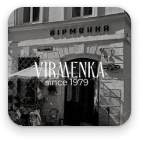
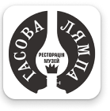

Перелік закладів, які надають знижки для військових чи пригощають смачною львівською кавою

Кав'ярня Вірменка
вул. Вірменська, 19 | 9:00-22:00 –
культова кав'ярня у Львові, місце зустрічей представників мистецького андеґраунду і контркультури.
спеціальна пропозиція: безкоштовна класична кава
вул. Нижанківського,20 | 8:00-22:00 –
ресторан, де можна скуштувати страви італійської та української кухні. В теплу пору року піднімайтесь на літню терасу, щоб одночасно насолоджуватись смачної їжею та чудовою панорамою старовинного Львова.
спеціальна пропозиція: знижка 20%
пл. Ринок, 45 | 9:00-23:00 -
ресторан із затишною атмосферою, де готують страви української та європейської кухні.
спеціальна пропозиція: пригощають напоями - кава/чай, а також першими стравами та салатами

Гасова Лямпа
вул. Вірменська, 20 | пн-пт 12:00-23:00; сб-нд 11:00 - 23:00
ресторація-музей, в якому можна не тільки смачно поїсти, тут представлена унікальна колекція гасових лямп
спеціальна пропозиція: безкоштовна кава